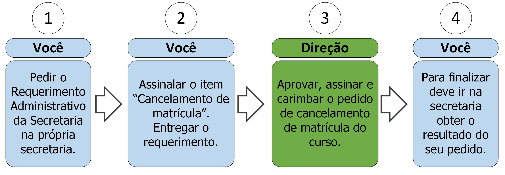

2. Cancelamento de Matricula

2.1 Descrição
A qualquer momento durante o curso você pode solicitar o cancelamento da sua matrícula. Para isso deve seguir os seguintes passos:
- A. Peça o Requerimento Administrativo da Secretaria;
- B. Assinale o item “Cancelamento de matrícula”;
- C. Entregue o requerimento;
- D. A direção aprovará, assinará e carimbará seu pedido;
- E. Vá à secretaria e procure saber sobre o resultado do seu requerimento (ver regra 1 na seção 2.3).
2.2 Documentos necessários
Nenhum.
2.3 Regras
- 1. Prazo de efetivação: A Secretaria tem até 5 dias úteis para cancelar sua matrícula.